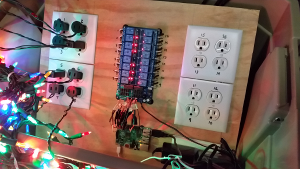
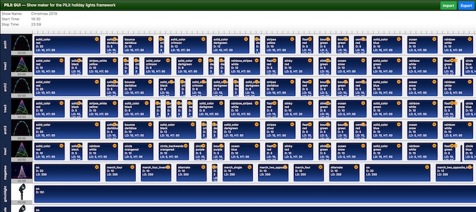

Controlling Christmas lights with MQTT
Posted on Fri 13 December 2019 in Making
I'm one of those Clark Griswold kind of guys that totally over-decorates his house. To make my lights more interesting, I've built my own light animation system which I call PiLit.

Of course, all my code is free and open source. Check it out at https://github.com/skypanther/PiLit.
Overview
PiLit is made up of three components:
| Component | Function |
|---|---|
| PiLit player | The PiLit player is a python script that runs the show animation. It reads from a JSON "script" and sends commands on the network to control the lights. |
| Nodes | Nodes are the networked hardware components that control the lights. |
| PiLit GUI | A show generation web app to make creating show sequences relatively easy |
The player can run on any computer that supports Python and can connect to the same network as your nodes. I use a Raspberry Pi 3B+ for this. The player sends MQTT messages to the nodes with instructions of what light sequence to play. The nodes are smart devices in that they "know" how to perform various lighting functions. They listen for MQTT messages telling them what function to perform, but they do the actual controlling.
There are a few benefits, and a few downsides to this architecture. On the plus side, much less data must be passed across the network and the nodes and player can use different architectures, programming languages, etc. In other words, the player can be a lot simpler but the nodes must be a bit more complex. Another downside is that to add new lighting functions, both the nodes and player need to be updated.
MQTT
I chose to use MQTT for message transport because there is very little overhead associated with the MQTT protocol. Messages are transmitted very quickly. Plus there are some great libraries for both Python and C/C++.
In PiLit, messages are basically in the form channel/payload where channel is the name of the node that should act on the message and payload is a string describing what animation to play. For example, a leaping arch node subscribed to an arch1 channel would listen for a message like this:
arch1/red:bounce:5:50:true
The message is a colon-delimited string that tells the arch what color to show, what animation sequence to play, and additional timing and control values. See the repo for details on the actual message payloads.
Nodes can subscribe to multiple channels, so a leaping arch might join both the arch1 channel and the all_arches channel. If all my leaping arches have joined all_arches then I can set them all to the same animation with a single MQTT message addressed to that channel.
Nodes
Nodes as I mentioned are smart devices. They are some type of microcontroller or single-board computer running code that I wrote. PiLit currently includes three types of nodes:
| Node type | Platform | Language | Lights that are controlled |
|---|---|---|---|
| pixel_node | Arduino/ESP8266 | C++ | RGB "neopixels" |
| onoff_node | Arduino/ESP8266 | C++ | Single relay (e.g. to turn on/off a spotlight) |
| multi_relay | Raspbery Pi | Python | Multi-channel relay (e.g. a Sainsmart 16-relay board) |
For microcontrollers, you could use just about any Arduino-like board. The ESP8266s are great because they offer better specs than most Arduinos, at a lower price, and include WiFi support built in. The downside of most any of these microcontrollers is that they're 3.3V devices and the typical RGB LED is a 5V device. So, you'll need a level shifter to convert the 3.3 into 5V signals. You can generally buy 3.3V relays for on/off nodes, eliminating the need for a level shifter.
The first Christmas light device I created was my Raspberry Pi-based megatree controller. Using a cheap 16-channel relay board, I control outlets into which the strings of lights on my tree are plugged. A Python script running on the Pi turns the outlets on or off.

I've rewritten and updated that original script to fit the PiLit architecture. But, since I had the hardware, I kept this node as a Python script. There's no reason an ESP8266 couldn't be used instead, but I have no plans at the moment to create such a node.
PiLit GUI
The show-generation app is for now called PiLit GUI. It's a React web app. Basically, I needed to learn React for work so this was a great "real world" app to learn on. (In other words, don't judge the code too harshly. I'm sure I have not written the best React app here.)

This app lets you define one or more channels, each of which correspond to a node. Then, you define a series of animations for each channel. When done, you export your show to a JSON file. This file is the script you run with the PiLit Player.
Challenges
The system overall works well. The software portions of PiLit have worked out great. But I have had to deal with some physical / hardware challenges.
Keeping water out of the nodes has been a big problem. I put each in some sort of plastic container (an old food container, craft box, etc.). But of course, wires must go in and out of the boxes. Despite my best attempts, water has gotten in causing shorts. One box filled with water, then froze. The ESP8266 in that node did not like being frozen in a block of ice -- it fried in fact. I also discovered that exterior latex caulk dissolves when exposed to constant moisture. Next year I'll use bathtub style caulk instead.
Another challenge has been solid wiring connections. The pixel strips are rather delicate. Wind and ice have broken my connections a few times. Apparently I'm not great at soldering since my connections at the microcontrollers have failed repeatedly too. More than once I've had to drag out my soldering tools and sit in the snow re-soldering connections.
Looking ahead
I designed and wrote PiLit, and built most of my nodes, in my spare time in September and November this year. Over the next year, I plan to refine my physical node builds to better protect from the elements. But I also plan to enhance the software components. A few areas I may tackle include:
- Improving timing -- currently it's impossible to synchronize multiple nodes exactly. So for example, my three leaping arches don't "bounce" in time with each other.
- Adding more lighting sequences to the nodes, as well as improving performances.
- Updating the GUI show-creation app in various ways, such as offering a show preview mode and refining its UI.
- Add more instructions on building the nodes, as well as on setting up and using PiLit in general.
Finally, I'd really like to add an LED matrix display (to show images, video clips, and text) to my decorations. I'd also like to add an FM transmitter and audio track to my show. I will update PiLit to support those features if I can add those elements.